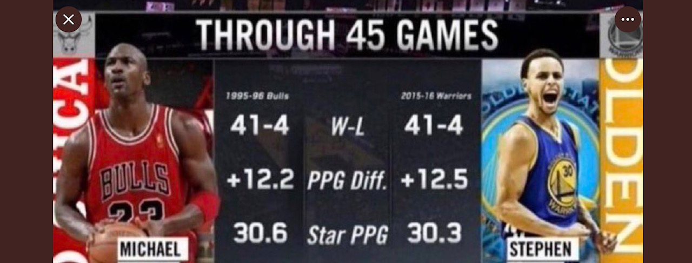

In the past 13 years, Stephen Curry has revolutionised the game. At 6'3" he hardly typifies what you
would think is valued in basketball: size, but the game has changed so much.
I grew up loving watching Michael Jordan, and my first love was college basketball. I always loved the
fact that you had teams
made up of individuals that one day would become doctors, financial advisors, teachers, engineers, and
they exhibited such team work, especially when they also had massive super stars on their teams. It's
why I love the Warriors since they typify great teamwork, and ball movement.
Steph and Klay NBA Finals(ii)
Nowadays, the talking heads in sports that never let it rest will long debate about who is the best
this, or best that...i'll leave this here:

Steph vs Jordan(iii) long may the debate rage on...
As I write this, my favourite team is still the reigning NBA Champions and this is likely to change
this week. Over history though if I had to choose a team of the best 15 players all time,here goes:
(Note, 1-5, are the starting positions PG, SG, SF, PF, and Center):